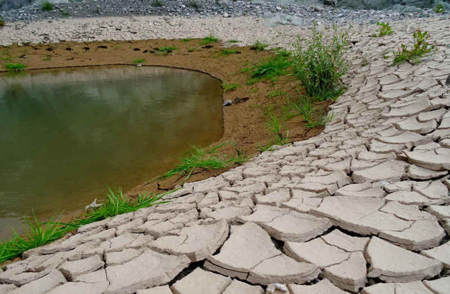
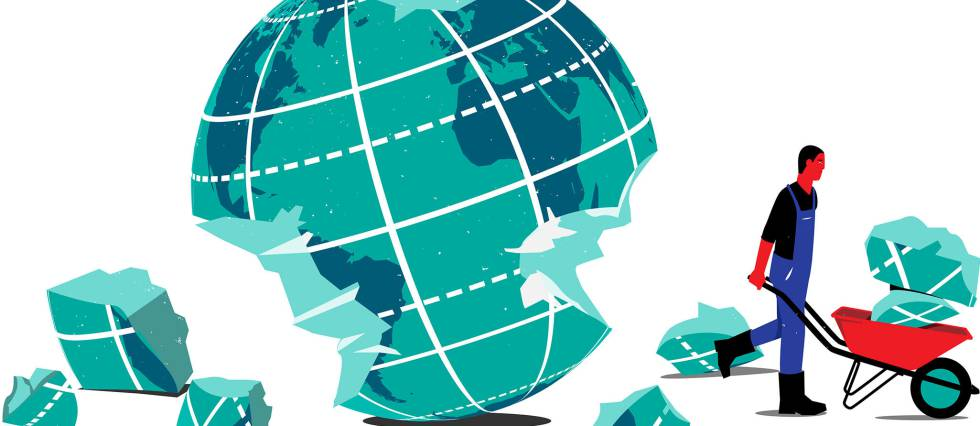
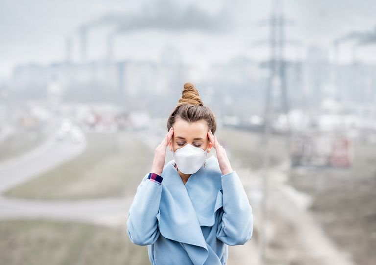
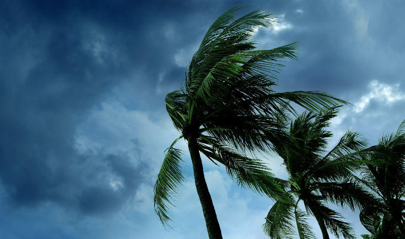
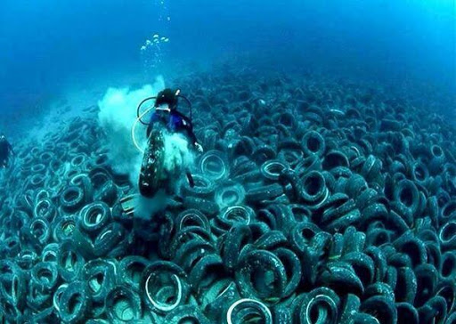
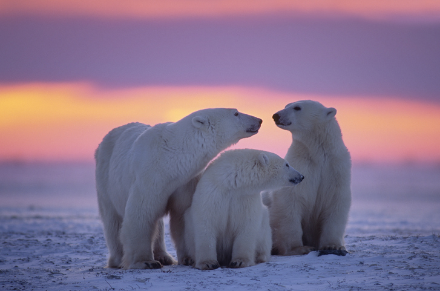

Conocer lo que está ocurriendo a nuestro alrededor es el primer paso para lograr un planeta mejor. Estos son algunos de
los problemas del medio ambiente que debes conocer para poder actuar
•CONCEPTO:
Los problemas del medio ambiente sobre los pulmones del planeta: los bosques desaparecen por la deforestación
Durante los últimos años hemos asistido a una progresiva destrucción de los bosques o deforestación. En muchos países la deforestación
es consecuencia de la agricultura no sostenible y la explotación de la madera.
La sequía y la escasez de agua: los problemas medioambientales en el mundo afectan a los recursos naturales
El 70% de la superficie de la tierra está cubierta de agua
Pero el 97,5% del agua de mar no es apta para el consumo humano.
Por otra parte, la demanda de agua crece y está previsto que aumente en un 55% hasta el año 2050.
Adicionalmente, encontramos la problemática de la calidad del agua, lo que hace que se esté convirtiendo en uno
de los bienes más preciados.
De hecho, el agua en mal estado es causa de enfermedades mortales que afectan, principalmente, a niños y niñas.
Por ejemplo, la diarrea supone el 40% de las muertes infantiles en una emergencia. Prácticamente la mitad de
estas muertes se podrían evitar con el simple gesto de lavarse las manos. Desde Oxfam Intermón nos hemos
comprometido con este problema, y una de nuestras principales preocupaciones es que estos niños y niñas
tengan acceso a agua limpia.

Consumo abusivo: tus residuos agravan los problemas medioambientales globales

En base a los datos de Eurostat durante el año 2014 los residuos generados en la Unión Europea,
por las empresas y los hogares ascendieron a 2.503 millones de toneladas, que es la cifra más
alta que se ha registrado en la Unión Europea durante el periodo de 2004 a 2014
En este sentido el reciclaje es esencial. Quédate con estas ideas:
Es una forma de reducir deshechos
Permite evitar el uso de más materias primas.
Contribuye a reducir el efecto en el entorno natural.
Los problemas del medio ambiente también dañan tu salud: contaminación del aire que respiras

¿Aún no lo sabías? La Organización Mundial de la Salud (OMS) considera que hay una estrecha relación entre la salud respiratoria
y cardiovascular y los niveles de polución del aire: con niveles bajos de este tipo de contaminación, tu salud será mejor.
La contaminación del aire que respiramos por las emisiones de gases es uno de los problemas medioambientales más preocupantes. Actualmente:
China es el país más contaminante en cuanto a emisiones de CO2 ya que emite 10,64 kilotones.
Seguida por Estados Unidos, con 5,17.
En base a los datos de la Asociación de Empresas Gestoras de los Transportes Urbanos Colectivos (ATUC), el uso del
transporte público evita la emisión de hasta 5 millones de toneladas de CO2 al año, por lo que con gestos sencillos
como el uso del transporte público o de coches eléctricos, podemos contribuir a tener un aire mejor. Ya sabes,
a partir de ahora... autobús, metro o bicicleta para contribuir a mitigar uno de los problemas del medio ambiente
que está perjudicando a tu salud.
Uno de los problemas del medio ambiente más graves: el cambio climático

La naturaleza nos avisa cada año de que algo está cambiando. Y la debemos escuchar. En base a datos de la Unión Europea
el aumento de la temperatura provoca:
Deforestación.
Destrucción de hábitats naturales.
Deshielo de los polos.
Temperaturas extremas.
Fenómenos meteorológicos como tifones o huracanes.
Contaminación del mar: los problemas del medio ambiente y tu alimentación

La contaminación del mar se debe, entre otras causas, al uso de sustancias tóxicas derivadas de la industria,
de pesticidas que se utilizan en la agricultura o al vertido de petróleo. Esto supone un grave problema que se
puede trasladar a nuestra propia cadena alimentaria.
Los problemas del medio ambiente ponen en riesgo la biodiversidad: peligro de extinción de especies
Todo lo que ocurre en el medio ambiente está relacionado, y la extinción de las especies es una de las
consecuencias de todas las problemáticas que hemos descrito anteriormente.
En base al Índice Planeta Vivo 2016 la población del mundo de peces, aves, anfibios,
mamíferos y reptiles disminuyó en un 58% entre 1970 y 2012.
El aumento de las especies en peligro de extinción y la reducción de la biodiversidad son dos cuestiones
que deben preocuparnos, aunque todavía estamos a tiempo de poner de nuestra parte para minimizarlas o,
en algunos casos, revertir la tendencia llegando a soluciones para estas especies en peligro.

Resolución
Ayuda al planeta
Vivir en armonía con la naturaleza y dejar a nuestros hijos e hijas un planeta sano deben ser los objetivos
de nuestro día a día. No basta con asustarse cuando vemos un vertido de petróleo en la televisión:
es importante actuar y concienciarnos. ¿Crees que el planeta puede esperar?
Algunas de las formas en las que puedes contribuir a solucionar los problemas del medio ambiente y a frenar
el cambio climático y a reducir la huella del ser humano sobre la Tierra, son el ahorro de energía, el
reciclaje de residuos o el cuidado del consumo del agua o de luz de tu hogar